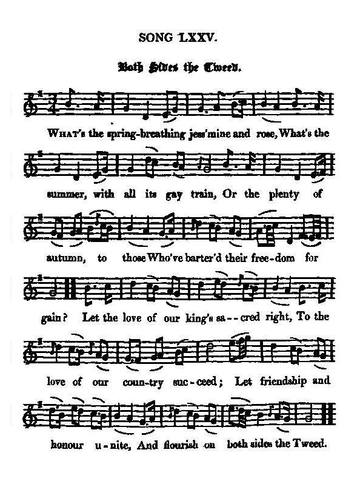

On Both Sides the Tweed
Les rives de la Tweed
Union Acts and corruption
Les Actes d'Union et la corruption
from "The True Loyalist", page 36, 1779, and
"Songs from David Herd's Manuscripts" edited by Hans Hecht in 1904, N°117 p. 269
Tune - Mélodie"Tweedside"
Hogg's "Jacobite Reliques", Volume I, N° 75, 1824
Sequenced by Christian Souchon

|
To the tune: "Is a beautiful song, to the old Scottish air of "Tweedside". I have been unable to find any key to the names of the authors of these songs, but hope at the end of the work to add a list of a part of them." [Hogg was as good as his word]. James Hogg in "Jacobite Relics", 1819. Andrew Kuntz in his "Fiddler's Companion" (cf.links) says that "this tune appears in nearly all old collections of British songs and ballads, beginning with Allan Ramsay's "Gentle Shepherd" (1725) and its popularity continued through the latter part of the 18th century. As an instrumental piece, it also appears in numerous publications in England and Scotland, for instance, to name the earliest appearance, in Adam Craig's "Collection of the Choicest Scots Tunes (1730)". He reminds us that "for much of its length, the Tweed marks the border between England and Scotland." R. Crawford's original lyrics of "Tweedside" read thus: What beauties does Flora disclose? How sweet are her smiles upon Tweed! Yet Mary's still sweeter than those; Both nature and fancy exceed. Nor daisy, nor sweet blushing rose, Nor all the gay flowers of the field, Nor Tweed gliding gently through those Such beauty and pleasure does yield. etc. From David Herd's "Ancient and Modern Scottish Songs", volume I, 1769 or 1776. This collection includes two other songs to the same tune. |
A propos de la mélodie: "Voici un beau chant composé sur l'ancienne mélodie écossaise "Au bord de la Tweed". Je n'ai pas réussi à découvrir qui sont les auteurs de tous ces chants mais j'espère, qu'une fois arrivé au bout de mon ouvrage, je serai en mesure d'annexer une liste de certains d'entre eux." [Hogg a tenu parole] James Hogg in "Jacobite Relics", 1819. Andrew Kuntz dans son "Fiddler's Companion" (cf.liens), nous dit que "ce chant apparaît dans presque tous les recueils anciens de chants et de ballades britanniques, à commencer par l'opéra de Ramsay, "le Bon Berger" (1725). Sa popularité s'est prolongée jusqu'à la fin du 18ème siècle. En tant que pièce instrumentale, elle figure aussi dans de nombreuse publications anglaises et écossaises, par exemple, pour ne citer que la plus ancienne publication, chez Adam Craig, dans sa "Collection de pièces choisies écossaises (1730)". Il nous rappelle en outre que "sur la plus grande partie de sa longueur, la Tweed fait la frontière entre l'Angleterre et l'Ecosse." Les paroles originales de R. Crawford pour "Tweedside" sont les suivantes: Quelles sont donc les beautés que nous révèle Flore? Comme elle sourit sur les rives de la Tweed! Le sourire de Marie me charme plus encore. Il dépasse en grâce nature et art réunis. La pâquerette, non plus que l'écarlate rose Ou la gentille fleurette dont s'égaye le champ, Ou la Tweed qui s'écoule au milieu de tant de belles choses Ne sauraient éclipser charme et plaisirs si charmants. etc. De "Chants anciens et modernes d'Ecosse" de D. Herd, volume 1, 1769 ou 1776. Ce recueil contient 2 autres chants sur le même timbre |

|
ON BOTH SIDES THE TWEED 1. What's the spring breathing jess'mine (varlot) and rose, What's the summer, with all its gay train, Or the plenty of autumn, to those Who've barter'd their freedom for gain? Let the love of our K[in]g's sacred right, To the love of our Country succeed; Let friendship and honour unite, And flourish on both sides the Tweed. 2. No sweetness the senses can chear, Which corruption and bribery blind; No brightness that gloom e'er can clear, For honour's the sun (son) of the mind. Let the love, &c. 3. Let virtue distinguish the brave, Place riches in lowest degree; Think him poorest who can (dares) be a slave, (And) Him richest who dares to be free. Let the love, &c. 4. Let us think how our ancestors rose, Let us think how our ancestors fell, The rights they defended, and (it's) those They bought with their blood we'll ne'er (that we) sell. Let the love, &c. Source: "The Jacobite Relics of Scotland, being the Songs, Airs and Legends of the Adherents to the House of Stuart" collected by James Hogg, published in Edinburgh by William Blackwood in 1819. |
LES RIVES DE LA TWEED 1. A quoi bon, printemps, fleurer jasmin et rose? A quoi bon, ce cortège de couleurs, été? A quoi bon, automne, tous ces fruits que tu proposes, Quand certains préfèrent l'argent à la liberté? L'attachement aux droits sacrés de notre monarque, Qu'il aille de pair avec l'amour de notre patrie! Que l'amitié, l'honneur, jusqu'au jour que prescrira la Parque, Fleurissent sur l'une et l'autre rive de la Tweed! 2. Quelle âme serait de douceur transportée Si la corruption l'aveugle, ou bien le profit? Nuit que n'illumine pas l'aurore aux doigts de fée, Car l'honneur est le soleil qui brille sur l'esprit. L'attachement ... 3. De la seule vertu s'honore le brave. La richesse chez lui ne saurait l'emporter. Il tient pour pauvre celui qui veut être un esclave Et pour riche celui qui chérit la liberté! L'attachement ... 4. Voyez comme nos ancêtres se levèrent! L'offrande de sa vie que plus d'un consentit Pour la défense des droits qu'à leurs fils ils léguèrent! Ils ont le prix du sang: les vendre n'est point permis! L'attachement ... (Trad. Christian Souchon(c)2010) |